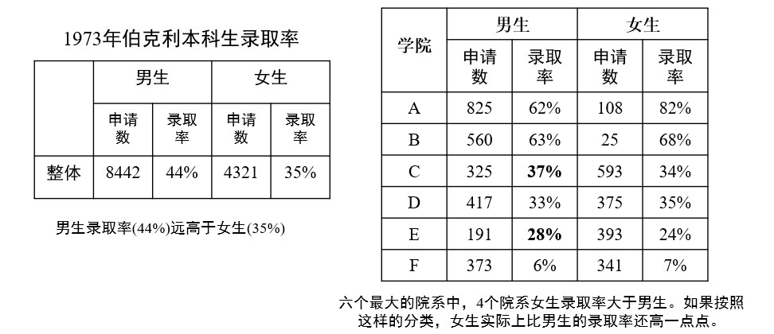
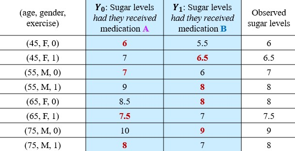
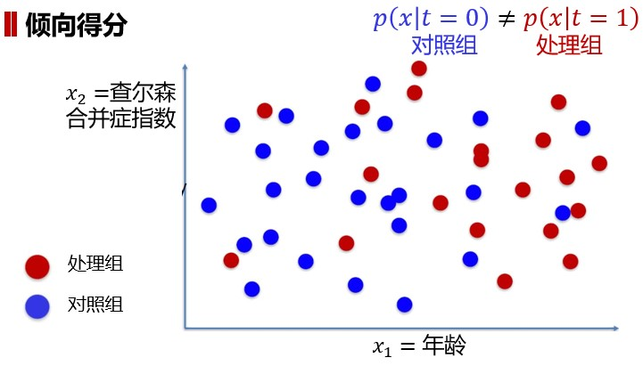
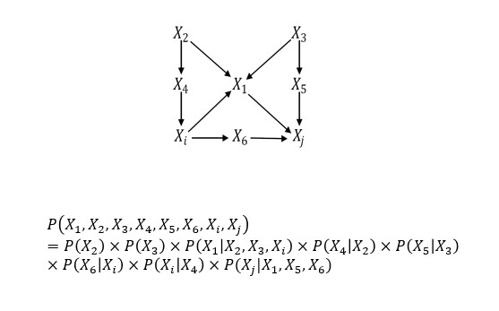

Chapter1 temp
1.5 因果推理
辛普森悖论：
在总体样本成立的某种关系在分组样本中却不一定成立甚至相反。

公式概括：$\frac{b}{a}<\frac{b'}{a'},\frac{d}{c}<\frac{d'}{c'},\frac{b+d}{a+c}>\frac{b'+d'}{a'+c'}$
事实上，辛普森悖论的主要原因是因为“第三变量”（又称为混杂因素）导致了虚假关联。
变量的关联关系：

- 因果关联： 一个变量是另一个变量的原因
- 混淆关联： 待研究的两个变量之间存在共同的原因变量
- 选择关联： 待研究的两个变量之间存在共同的结果变量
潜在结构框架
每个个体$x$有两种潜在结果： * $Y_0(x)$：个体不被处理（控制结果） * $Y_1(x)$：个体被处理（处理结果）
| $~$ | $Y_1$ | $Y_0$ |
|---|---|---|
| 控制组 | 反事实结果 | 实际结果 |
| 处理组 | 实际结果 | 反事实结果 |
- ATE：平均处理效应，表示$Y_1$和$Y_0$两种潜在结果期望（平均值）的差异 $ATE=E[Y_1-Y_0]$
- CATE：条件平均处理效应，表示在某个给定条件（个体）$x_i$下，$Y_1$和$Y_0$两种潜在结果期望（平均值）的差异 $CATE(x_i)=E_{Y_1\sim p(Y_1|x_i)}[Y_1|x_i]-E_{Y_0\sim p(Y_0|x_i)}[Y_0|x_i]$
$E_{Y_1\sim p(Y_1|x_i)}[Y_1|x_i]$表示在给定特征$x_i$的情况下，按照$Y_1$的条件概率分布$p(Y_1|x_i)$计算的$Y_1$的期望值
- 实际观察到的效果（实际结果） $y_i=t_iY_1(x_i)+(1-t_i)Y_0(x_i)$
- 未观察到的结果（反事实结果） $y_i^{CF}=(1-t_i)Y_0(x_i)+t_iY_0(x_i)$
对于第$i$个个体$x_i$，如果其接受了处理，则$t_i=1$，反之$t_i=0$
对于同一个体（单元），最多只有一个潜在结果被实现而能观察到
例：  其中标红的数据所在列告诉我们该个体是处理组还是控制组 我们可以发现，若直接计算处理组和控制组的平均处理效应： $Mean(sugar|B)-Mean(sugar|A)=7.875-7.125=0.75$ 在各自具有反事实结果的情况下再计算平均处理效应： $Mean(sugar|had~they~received~B)-Mean(sugar|had~they~received~A)=7.125-7.875=-0.75$ 两者不同，且应该是后者更正确
因此，对于潜在因素的影响，最好的解决方法是匹配，即找到每个个体的反事实结果（要求除研究特征外其他一模一样，如同卵双胞胎）
1-NN 匹配（最邻近匹配）
对于每一个个体$x_i$，定义$j(x_i)$为其最邻近反事实样本，则 * $t_i=1$：$x$是处理组 $CATE(x_i)=y_i-y_{j(i)}$ * $t_i=0$：$x$是控制组 $CATE(x_i)=y_{j(i)}-y_{i}$
于是综上可得：$CATE(x_i)=(2t_i-1)(y_{i}-Y_{j(i)})$
$ATE=\frac{1}{n}\sum\limits_{i=1}^nCATE(x_i)$
尽管1-NN匹配偏倚较小，但结果通常不稳定
倾向得分
利用倾向值，对样本重新加权，将观察性研究转变为伪随机试验，实现类似于随机试验中的随机分配干预的目的（人话：改变原本的直接平均计算，挑选合理的结果增加其权重）
例：  对于这个实验，我们发现控制组和对照组有年龄这个额外因素干扰，所以我们给中间红点和蓝点交会处的样本增加权重，以减少年龄的干扰
倾向得分基于逆概率权重（各研究对象接受其实际分配到的处理水平的概率的倒数）对原始样本再加权
结构因果模型
结构因果模型由两组变量集合$U$和$V$以及一组函数$f$组成。其中，$f$是根据模型中其他变量取值而给𝑉中每一个变量赋值的函数
如果变量$X$出现在给变量$Y$赋值的函数中，则$X$是$Y$的直接原因；如果$X$是$Y$的直接原因或者其他原因，均称$X$是$Y$的原因
$U$中的变量被称为外生变量，即这些变量处于模型之外，不对其阐述和解释；$V$中的变量称为内生变量。以图中的节点来说明内生变量和外生变量的关系：每一个内生变量都至少是一个外生变量的后代；而每一个外生变量都不是其他外生或内生变量的后代，它们没有祖先，也就是说，外生变量都是图中的根节点。如果知道了每一个外生变量的值，就可以使用函数$f$来计算出每一个内生变量的值。
在因果图中，若变量$Y$是另一个变量$X$的孩子，则$X$是$Y$的直接原因；若$Y$是$X$的后代，则$X$是$Y$的潜在原因
未知的外生变量有时又被称为误差项，或忽略因素
例： 在结构因果模型框架下讨论某种治疗方案$X$对肝脏功能$Y$的因果关系。在讨论$X$对$Y$的因果关系时，可能会假设肝脏功能$Y$会受到水污染$Z$的影响，由于水污染$Z$不会受到治疗方案$X$和肝脏功能$Y$的影响，因此，可将$X$和$Y$作为内生变量，$Z$作为外生变量来进行研究。
因果图中的联合概率分布
对于任意$d$个变量$x_1,···,x_d$，其联合概率为
$P(x_1,···,x_d)=\prod\limits_{i=1}^{d}P(x_i|x_{parent(i)})$
其中$x_{parent(i)}$为$x_i$所有父节点
例： 
因果图基本结构
链
$P(X,Y|Z)=\frac{P(X,Y,Z)}{P(Z)}=\frac{P(X)P(Z|X)P(Y|Z)}{P(Z)}=P(X|Z)P(Y|Z)$
结论：$X$和$Y$在给定$Z$时条件独立
定理：对于变量$X$和$Y$，若$X$和$Y$之间只有一条单向路径，变量$Z$是截断该路径的任一变量，则在给定$Z$时$X$和$Y$条件独立
分连
$P(X,Y|Z)=\frac{P(X,Y,Z)}{P(Z)}=\frac{P(Z)P(X|Z)P(Y|Z)}{P(Z)}=P(X|Z)P(Y|Z)$
结论：$X$和$Y$在给定$Z$时条件独立
定理：若变量$Z$是变量$X$和$Y$的共同原因，且$X$到$Y$只有一条路径（即该分连），则在给定$Z$时$X$和$Y$条件独立
汇连
$P(X,Y|Z)=\frac{P(X,Y,Z)}{P(Z)}=\frac{P(X)P(Y)P(Z|X,Y)}{P(Z)}\neq P(X|Z)P(Y|Z)$
结论：$X$和$Y$在给定$Z$时条件相关
定理：若变量$Z$是变量$X$和$Y$的汇连节点，且$X$到$Y$只有一条路径（即该汇连），则$X$和$Y$相互独立，但在给定$Z$或$Z$的后代时$X$和$Y$是相关的
D-分离
用于判断任意两个节点的相关性和独立性，若存在一条路径（无向）将这两个节点连通，则称这两个节点是有向连接的，即这两个节点是相关的；若不存在这样的路径将这两个节点连通，则称这两个节点是有向分离的，即这两个节点相互独立
当满足以下条件之一，路径$p$被限定集$Z$阻塞： * 路径$p$含有链结构$A\rightarrow B\rightarrow C$或分连结构$A\leftarrow B\rightarrow C$且中间节点$B$在$Z$中 * 路径$p$含有汇连结构$A\rightarrow B\leftarrow C$且汇连节点$B$及其后代都不在$Z$中 若$Z$阻塞了节点$X$和节点$Y$之间的每一条路径，则称给定$Z$时，$X$和$Y$是D-分离，即给定$Z$时，$X$和$Y$条件独立
例： 分析如下因果图中节点的关系

干预
指的是固定系统中的变量，然后改变系统，观察其他变量的变化
为了与$X$自然取值$x$时进行区分，在对$X$进行干预时，引入do算子，记作$do(X=x)$
- $P(Y=y|X=x)$：表示当发现$X=x$时，$Y=y$的概率，反映的是在取值为$x$的个体$X$上，$Y$的总体分布
- $P(Y=y|do(X=x))$：表示对$X$进行干预，固定其值为$x$时，$Y=y$的概率，反映的是将每一个$X$固定为$x$时，$Y$的总体分布
ACE：因果效应差（平均因果效应） $ACE=P(Y=y|do(X=x_1))-P(Y=y|do(X=x_2))$
$P(Y=y|do(X=x))$被称为因果效应
当$X$被干预固定成$x$后，因果图中所有指向$X$的边均可移除，此时因果效应$P(Y=y|do(X=x))$等价于条件概率$P_m(Y=y|X=x)$